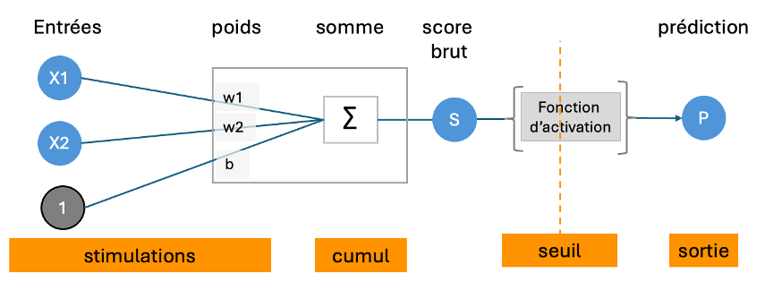
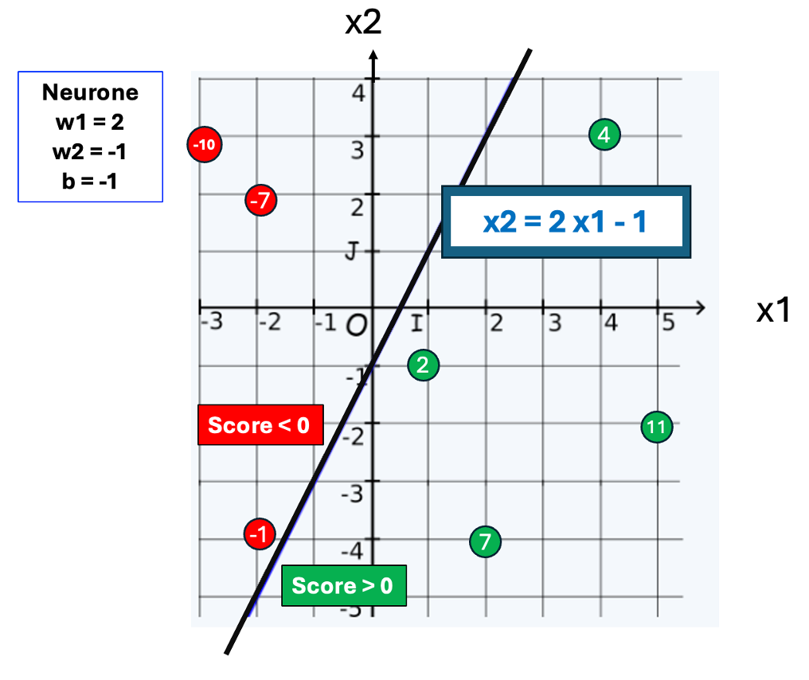
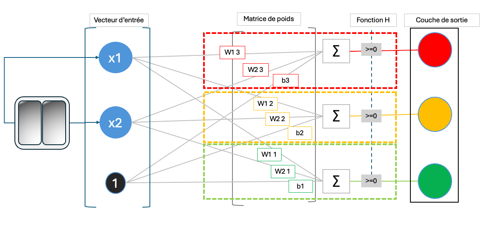

Le neurone artificiel : une fonction, pas un organe
Pourquoi chercher à copier le neurone biologique
Le neurone biologique est un déclencheur à effet de seuil : Si le cumul des stimulations reçues dépasse un certain niveau, il excite son axone. Ce comportement est apparu comme simple à simuler. On a cru que l'intelligence émergerait du nombre de connexions.

Représentation d'un neurone biologique
Le neurone artificiel est un calcul
Un neurone artificiel reproduit la logique du neurone biologique par des opérations simples.Il associe à chaque entrée un poids lui fixant son importance dans la décision commune.
Par des multiplications et une sommation, il va produire un score brut.
Ce score brut est traduit en prédiction par une fonction d'activation (au début de l'IA c'est la surveillance d'un seuil).

Schéma d'un neurone artificiel à deux entrées
C'est l'équation d'un droite que le biais b décale de l'origine (0,0).
Représentation géométrique du score brut
Un neurone découpe des régions dans l'espace des nombres réels. En deux dimensions, c'est une droite frontière qui sépare les scores positifs des négatifs.
Les poids w1,w2 conditionne la pente d'une droite, décalée de l'origine par le biais.
( Quelques valeurs de score brut sont affichées)
Tout neurone artificiel découpe son espace de nombres en deux parties.
- Avec deux entrées il sépare le plan (x1,x2) en deux parties par une droite.
- Avec trois entrées, il séparera l'espace en deux parties par un plan.
- Avec n entrées, il séparera un hyperespace en deux parties par un hyperplan.
La fonction d'activation crée la prédiction
La fonction d'activation f transforme le score brut en une prédiction.Celle du perceptron historique est la fonction échelon (Heaviside step function du nom de son inventeur).
- prédiction 1 si le score brut est supérieur ou égal à 0
- prédiction 0 s'il est inférieur

Le perceptron historique est un classifieur binaire.
Classifieur binaire
La fonction d'activation échelon crée des classifieurs binaires aux multiples usages:
- Filtrage de spam (un message est-il spam ou non)
- Détection de fraude bancaire (transaction frauduleuse ou légitime)
- Diagnostic médical (présence ou absence d'un marqueur de maladie)
- Analyse de sentiment (avis positif ou négatif)
- etc.
Classification multiple
Si on a plusieurs catégories à isoler on entraîne N classifieurs, un par
classe.
Si les catégories sont exclusives One-vs-all (OvA) il
faut veiller à ce qu'une seule sortie soit positive.
🟡 Expérimentation pratique
Le perceptron est le premier et le plus simple des neurones artificiels, mais il est suffisant pour en illustrer le fonctionnement.Piloter un feu tricolore avec des perceptrons
On imagine n'avoir que deux interrupteurs pour allumer trois feux.
Du code simplissime pourrait le faire. L'ambition est
d'utiliser des perceptrons pour en comprendre le fonctionnement.
Encodage préalable :
Un neurone ne sait faire que des calculs : il faut transformer
ce problème en nombres.
On prend arbitrairement comme convention qu'un interrupteur
fermé a la valeur 1 et un interrupteur ouvert la valeur 0.
De même on considère qu'une prise est alimentée si sa valeur est
1 et hors tension si elle vaut 0 .
But à atteindre
| Interrupteurs | sortie attendue | en numérique | ouvert ouvert: 0 0 |

|
0 0 0 |
|---|---|---|
| ouvert fermé: 0 1 |

|
1 0 0 |
| fermé ouvert: 1 0 |  |
0 1 0 |
| fermé fermé: 1 1 | 
|
0 0 1 |
Un neurone pour chaque feu
Un neurone n'ayant qu'une sortie. Il faut un réseau de 3 neurones distincts, un pour chaque prise.
Représentation du réseau avec 3 neurones perceptrons en parallèle
Chacun multiplie les mêmes entrées mais par ses propres poids.
La couche de sortie doit allumer un seul feu à la fois.
A propos de la taille des modèles IA
Un modèle est le tableau numérique des paramètres une fois le réseau entrainé. Sa taille est son nombre de paramètres.Notre réseau a 1 couche (de sortie) et 3 neurones avec 3 paramètres chacun. C'est un modèle a 9 paramètres
Les réseaux de neurones pour la reconnaissance d'images ont des millions (106) de paramètres et des dizaines de couches.
Les grands LLM (Large Language Model) en ont des milliers de milliards (1012) et des centaines de couches.
Le fonctionnement de base reste toujours le même que ce soit pour 10 , 106 ou 1012 paramètres, mais la puissance de calcul à mobiliser est exponentielle.